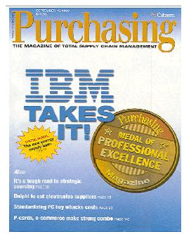
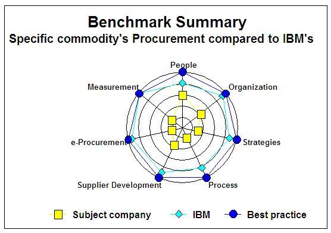

| Example: Process Benchmarks for Procurement Performance Measurements |
 |
|
| Related Elements |
|---|
It will not always be necessary to execute a full benchmark with lots of participating organizations. For several business processes success stories about best-in-class performers are published regularly in special literature and on Internet. The first steps of the benchmark then can be simplified by just using the performance measurements of the best-in-class organization to compare the client’s process to that ‘best-in-class’ and the real effort can be spent in analysis of the reasons behind the performance gaps and in defining potential improvement steps. Following this approach you have to be aware however that the ‘best-in-class’ organization, although it has the best overall performance on the business process concerned, is not necessarily the best on all different aspects of that process.  In 1999 IBM has won the Purchasing Magazine’s “Purchasing Medal of Excellence”. Since then IBM has supported several clients in different industries in benchmarking their purchasing process against IBM’s. The strength of this way of benchmarking is that the client gets a detailed and real practical advise about possible improvements in his process. The example below, based upon a number of real experiences, shows how a benchmark of a client’s Procurement processes against IBM’s processes and “best practice” could look like. In these cases IBM’s target situation for its own processes was assumed to be “best practice”. The following table illustrates how the start of the benchmark, a comparison on some selected Procurement Performance Measurements between IBM and the client, could look like. Be aware that in organizations that did not yet spend specific attention to their purchase process it could appear to be difficult to find this kind of information, because they don’t have the appropriate data warehouse environment available.
During the interviews first the interviewee was asked to describe his/her specific part of the process. Then the questionnaire was used to get a more detailed view on it. Next, the interviewers (an IBM consultant and an SME) asked whether he/she knew remarks or ideas for improvements and to what extent these were already being taken into account and, if not, why not. After that the interviewers suggested and explained alternatives, which they actually knew from the IBM-process or from ‘best practice’ and again they asked to what extent these were already being taken into account and, if not, why not. The experience was that most interviewees, being responsible for a specific commodity group, were surprised about IBM’s interpretation of the “end-to-end” approach, which appeared much broader than their own interpretation. They for example were not used to see Procurement having a major responsibility in organizing an efficient and effective process to collect requirements for their commodity and to harmonize the definition of requirements within their commodity. Their own interpretation of procurement roles was still much more passive. The elaboration results of the analysis were recorded in a report with columns indicating:
If necessary the interviewees were approached again to get additional insight and finally they were asked to review the resulting table. Be aware that the text in the columns must be short on one hand but accurate and precise on the other. Key aspect is that the interviewees recognize the ‘situation as found’, that they understand ‘best practice’ and the ‘potential savings’ and that they are motivated to support the defined improvement actions. The spreadsheet below (a summary containing ingredients from different actual cases) shows how the result could look like for a specific commodity group like Office Supplies or Car Lease.
 Figure: Layout Benchmark Summary |
| © Copyright IBM Corp. 1987, 2012 All Rights Reserved Property of IBM These materials are intended only for use as part of an IBM engagement |